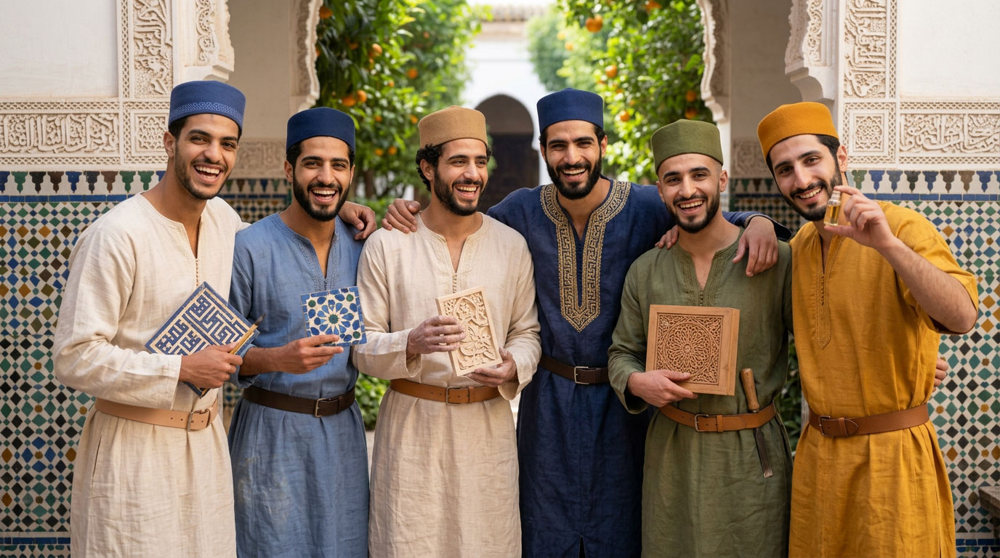
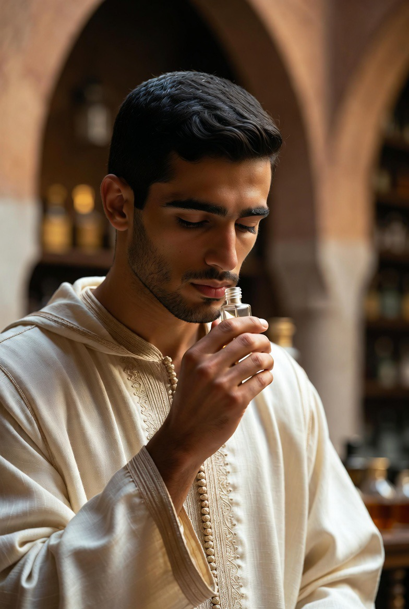
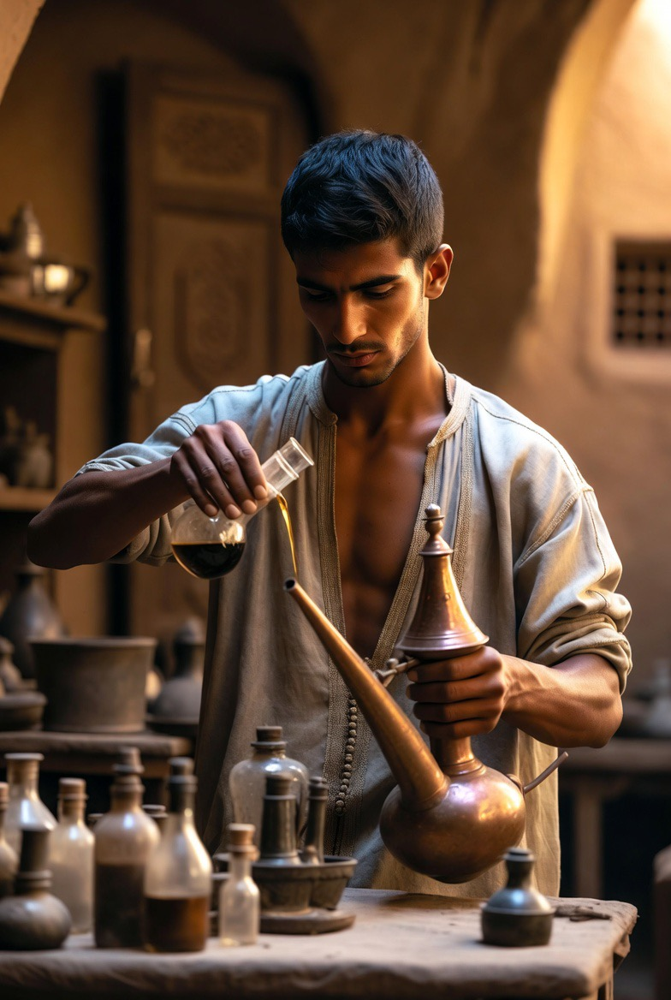
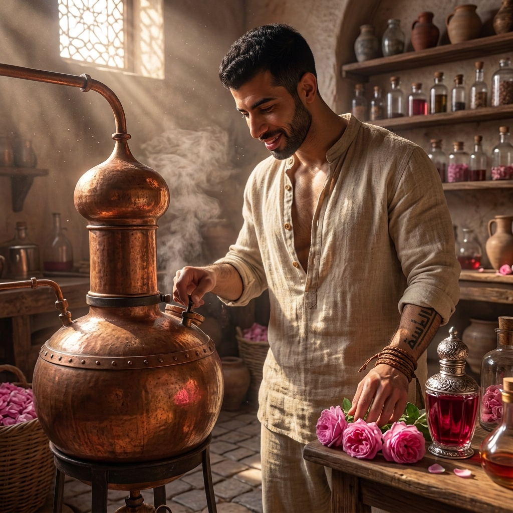
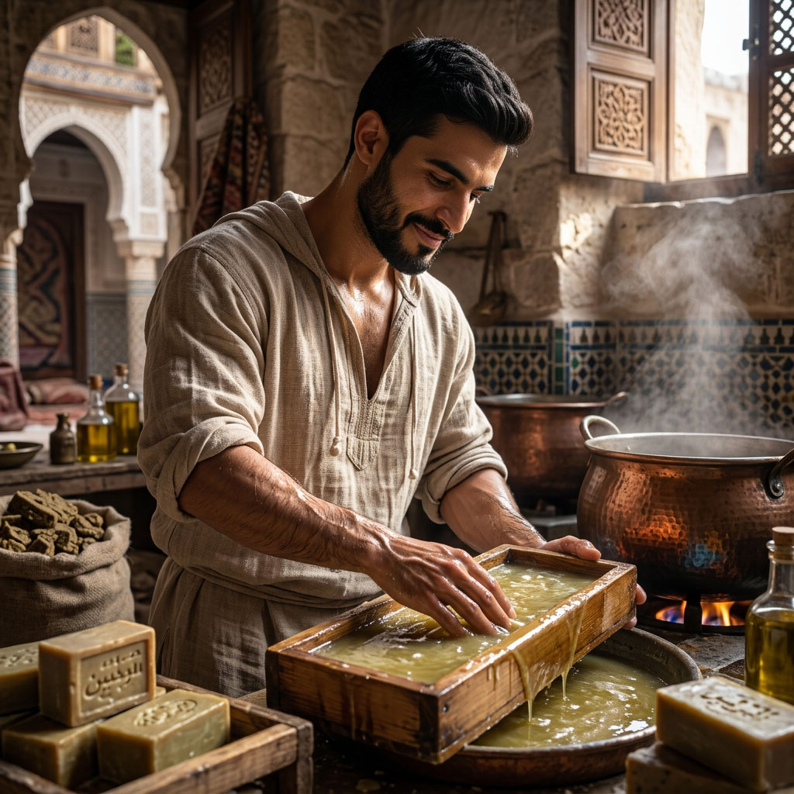
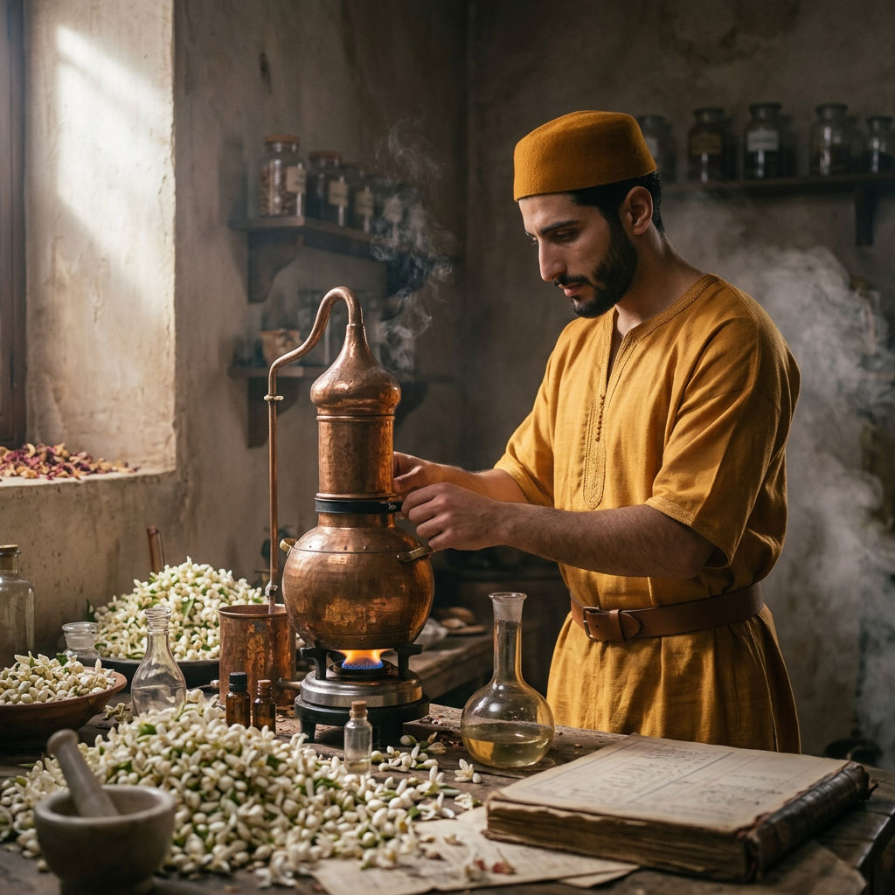
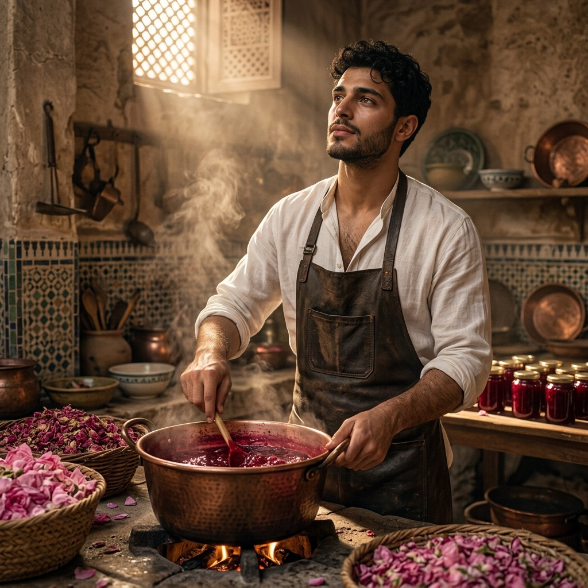
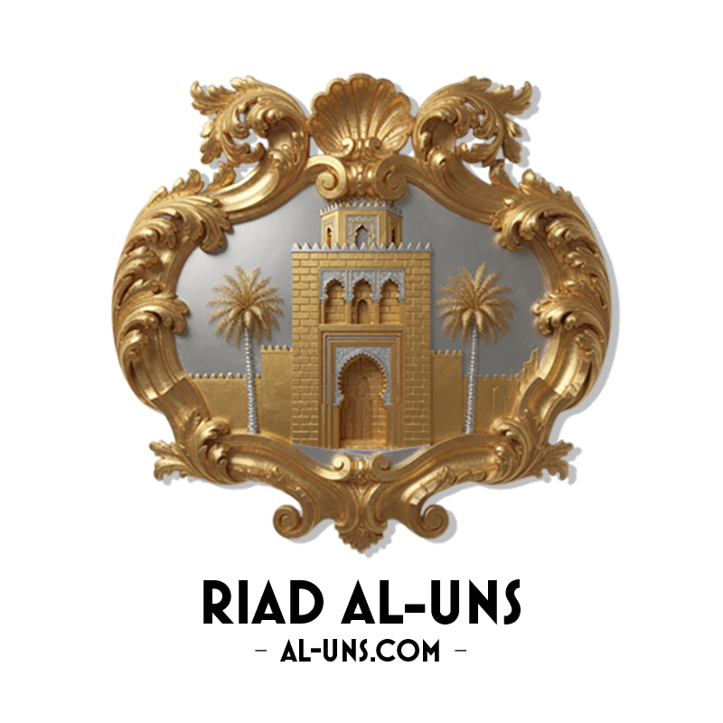

Crafts of the Riad
What the house produces with its own hands and from its garden — for the table, the body, hospitality.

Dar al-Hiraf does not only train apprentices: products are born from it. Damascus rose perfume, olive oil soaps, orange blossom water distilled from the riad's own orange trees, and pierced plaster pieces — each bears the mark of the house and, through its sale, sustains the life of the community.
Part of the proceeds funds the upkeep of the house; another part goes to the artisans from the very first pieces sold. This is not showcase craftsmanship: it is, in part, what keeps the Riad alive.
CRAFT OF SCENT
Perfumes & essences — the craft before the product
The Moroccan art of scent is above all a discipline of formation, on a par with zellige or calligraphy. Recognising an essence, dosing a blend, knowing the plant before the oil — the same seriousness, the same slowness.
The training unites three gestures: the nose that distinguishes, the hand that distils, the memory that retains. One first learns to smell, then to make.
إِذَا قَامَتَا تَضَوَّعَ الْمِسْكُ مِنْهُمَا
نَسِيمَ الصَّبَا جَاءَتْ بِرَيَّا الْقَرَنْفُلِ
"When they arose, musk exhaled from them — like the eastern breeze laden with the scent of clove."
Imru' al-Qays — Mu'allaqa

The nose
Recognising, distinguishing, memorising the essences. Before any composition, the student learns to name what he smells — rose, orange blossom, jasmine, wood, resin.

The gesture
Distillation, blending, dosage. The still — the word comes from the Arabic al-inbiq (الإنبيق), itself inherited from the Greek ambix — the proportions, the heating time: the hand learns the patience of transformation.
What the apprentice learns here becomes, once mastered, what the house produces and sells — see below.
Perfumes & body care

ESSENCE
Damascus rose perfume & rosewater
The Damascus rose (Rosa damascena), heir to the tradition of Kelaât M'Gouna and the valleys of the High Atlas, is distilled according to the ancient gesture. Pure rosewater for the face, the table and ritual; concentrated attar for the skin and linen.
The nose, the hand, the slow fire: what the apprentices learn in the perfume workshop becomes here a product of the house, sold under the seal of the Riad.

BODY
Olive oil soaps
Hard soaps and hammam soaps, made from pressed olive oil, sometimes scented with rose, jasmine or orange blossom. Simple gesture, pure matter — for the bath, the face, the hands of daily work.
They extend the logic of the trained body and of the hammam: purity, softness, nothing industrial.

GARDEN
Orange blossom distillate
The orange trees of the patio and the garden give, in spring, the orange blossom. Distilled on site, it becomes orange blossom water — for pastry, tea, linen, the evening ritual.
From garden to still: the same cycle as the rose, rooted in the Riad itself.
Garden kitchen

Rose jam, honey & garden herbs
Heir to Kelaât M'Gouna: Damascus rose petals, sugar, slow cooking — the same rose that gives the perfume and the rosewater becomes here jam, another face of the same matter. Alongside it, local honey and bunches of herbs from the kitchen garden — mint, verbena, thyme — dried or fresh, for the table and tea.
What the garden produces, the house puts on the table: nothing imported, nothing industrial.
Matter & hands

CARVED PLASTER
Gebs — carved plaster, from Samarra to Fez
Carved Islamic stucco was born in Samarra, the Abbasid capital in Iraq in the 9th century, where excavations have uncovered three successive decorative styles: the first two still close to the vine and plant motifs inherited from Byzantine and Syro-Palestinian art, the third — known as the "bevelled style" (the chisel's edge cutting the material obliquely rather than at a right angle) — entirely abstract, made of rhythmic curves ending in spirals. This third style, without any earlier equivalent, marks a decisive step toward the fully developed arabesque: a motif with neither beginning nor end, endlessly repeatable, which would go on to irrigate all later Islamic art.
From Samarra, the technique spread rapidly — as far as Afghanistan (the Nine-Domed Mosque of Balkh), to Tulunid Egypt (the Ibn Tulun mosque takes up its vocabulary even in carved wood), then, from the early 9th century, as far as the Maghreb: excavations of the Aghlabid palaces near Kairouan, in Tunisia, already bear its trace.
Stucco reaches its full maturity later and farther away, in al-Andalus and then in the Marinid Maghreb. It is there that the muqarnas (مقرنص) is born — the honeycomb or stalactite cells that cover domes, portals and capitals — carried to its height in the madrasas of Fez (Bou Inania, al-ʿAttarin) where carved plaster, zellige and cedar wood are stacked on a single wall in one composition.
The Riad's gebs (جبس) workshop takes up this gesture on the scale of an object: finely pierced plaster pieces, set with small coloured glass — the same technique that, on a large scale, filters light in the Riad's rooms, taken up here on the scale of a lamp or a wall panel. Each piece is unique: no template is ever repeated identically.
The gebs workshop, unlike the other crafts, does not train passing guests — the gesture is learned over years, within the house. But what it produces can, itself, travel.

WEAVING
Woven calligraphy bands — tiraz of the Riad
On small card-weaving or tablet-weaving looms — the scale suited to a band, not a whole piece — the workshop reproduces what the state manufactories of the medieval Arab world called tirāz (طراز): a woven inscription, in gold or silver thread on a ground of silk or linen, running along a garment or a household textile.
Three centres, three eras, one and the same institution:
The angular, sober Kufic script of the Fatimid workshops of Egypt (10th–12th c.), woven on unbleached linen.
The golden cursive script, more sumptuous, of the Nasrid tirāz of Granada — the same Alhambra already celebrated by Ibn Zamrak on the patio fountain.
And, further still, that of the mantle of Roger II of Sicily, woven in Palermo in 1133–34 by Arab craftsmen in the service of a Norman king — a lion overpowering a camel on either side of a stylised palm tree, inherited from a very ancient Sassanid motif (the tree of life flanked by confronted animals), with, along the hem, a genuine tirāz inscription in golden Kufic.
Damask and lampas follow the same Mediterranean route. Damask takes its name from Damascus itself, a great crossroads of the Silk Road where merchants and crusaders discovered it in the 11th century — the technique itself no doubt goes back to China, centuries earlier. But after the 9th century, when it became scarce almost everywhere else, it was in al-Andalus that it continued to be woven without interruption, before being rediscovered in Italy and then in France from the 13th century onward.
The Riad's weavers produce brocades and damasks, lampas and textile articles that take up ancient models and traditional motifs from the Arab tradition, unique and irreplaceable (also made to order).
الخيطُ يكتبُ ما لا يمحوه الزمانُ
"The thread writes what time does not erase." — Weaver's saying
Here too, no passing guest trains in it: it is a slow knowledge, close to calligraphy itself, passed on to those who stay.

Mark of the house
Every product bears the name of the Riad. Selling is not a parallel activity: it extends the training. The apprentice who has distilled, saponified, turned or sewn sees his piece put into circulation — and a share of the return comes back to him from the very first sales.
In this way the Riad's craftsmanship unites three things: the gesture learned at Dar al-Hiraf, the garden that supplies the matter, and the house that lives from what it produces.
ONE CLEAR LIMIT
What does not leave the house
Everything above leaves the Riad: the essences, the soaps, the preserves, the cloth, the commissioned pieces. One thing never does — the work each resident leaves in the walls at the end of his training, built into the building and received by his master.
It has no price because it can have no buyer. It is the one thing the house makes and does not part with.
Al-Athar — the work left behind →The terms on this page are gathered in the glossary of the house.